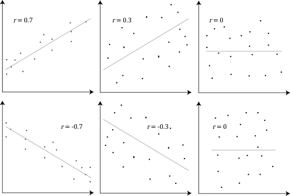

In psychology, a Variable is anything that can vary and is feasible and ethical to measure (like hours of sleep, levels of stress, or test scores). Once researchers decide what variables they want to study, they must choose a research method. Broadly, these fall into two categories: Non-Experimental Methodology (where we simply observe variables to see if they are related) and experiments (where we actively manipulate variables to prove cause and effect). Let's look at the strengths and weaknesses of both.
When naturalistic observations and surveys reveal that one trait or behavior accompanies another, we say the two correlate. A Correlation is a measure of the extent to which two variables change together, and thus of how well either variable predicts the other. To visualize this, researchers plot the data on a Scatterplot, a graphed cluster of dots where the slope suggests the direction of the relationship.
Correlations come in two forms:
Researchers measure the strength of this relationship using a Correlation Coefficient (represented as an r value), a statistical number ranging from -1.0 to +1.0. The closer the r-value is to 1.0 (positive or negative), the stronger the relationship. You do not need to know how to calculate r-value but being able to quickly interpret correlations is a key skill in AP Psychology!

Correlation Coefficients. Scatterplots visually represent the r-value. A perfect positive correlation (r = +1.0) forms a straight line sloping upward, while a perfect negative correlation (r = -1.0) slopes downward. The more scattered the points, the closer the r-value is to 0, indicating a progressively weaker relationship.
While correlations are great for making predictions, they are plagued by two logical traps that prevent us from claiming causation:
Sometimes, we perceive correlations that don't exist at all. An Illusory Correlation occurs when we believe a relationship exists between two things, but in reality, there is none (like believing that people act crazy during a full moon). We remember the times the crazy behavior happened during a full moon because it confirms our bias, but we forget all the times it didn't.
We are also easily fooled by a statistical phenomenon called Regression Toward the Mean. This is the tendency for extreme or unusual scores to naturally fall back (regress) toward their average over time. For example, if a student guesses blindly on a test and gets an incredibly lucky 100%, their score on the next test will likely regress back down toward their normal average of an 80%. If they wore "lucky socks" during the first test and didn't during the second, they might form an illusory correlation, failing to realize the drop was just a mathematical regression to the mean.
To definitively prove that one variable causes a change in another, researchers must move beyond observation and conduct an Experiment. This is a research method in which an investigator actively manipulates one or more factors to observe the effect on some behavior or mental process.
A true experiment requires several specific structural components:
To see how these pieces fit together, imagine a psychologist wants to test if drinking an energy drink before a big exam actually improves test scores. They gather a sample of 100 students and set up the following experiment:
💡 Pro-Tip for the Exam: If you ever get confused trying to tell the IV and DV apart on a question, plug them into this sentence: "The researcher wants to see if the [Independent Variable] causes a change in the [Dependent Variable]."
Does the energy drink cause a change in test scores? Yes, makes perfect sense.
Do test scores cause a change in the energy drink? No, that sounds ridiculous. Your IV and DV will instantly click!
To ensure the experiment is valid, researchers must eliminate any Confounding Variables—factors other than the independent variable that might accidentally produce an effect. The ultimate weapon against confounding participant variables is Random Assignment: assigning participants to the experimental and control groups by chance. If you are testing a new study technique, randomly assigning students ensures that the naturally "smart" kids or the "lazy" kids are evenly distributed between both groups, balancing them out.
Experiments must also account for the Placebo Effect—a phenomenon where a participant experiences real changes simply because they expect the treatment to work. To control for this, the control group is often given a Placebo (a fake pill or dummy treatment). To make sure expectations don't ruin the data, researchers use a Single-Blind Procedure (participants don't know which group they are in) or the gold-standard Double-Blind Procedure (neither the participants nor the researchers handing out the pills know who is in which group).
Finally, for an experiment to be truly scientific, the hypothesis must possess Falsifiability. This means the theory must be structured in a way that it is capable of being proven false by the data. If a theory can twist any outcome to mean "I was right," it isn't science!
The AP Psychology Exam heavily tests your ability to deconstruct experimental design. The College Board outlines three specific Science Practices for this topic:
The concepts of experimentation and correlation are the beating heart of the Article Analysis Question (AAQ) FRQ. Here is exactly how these terms will appear on your test:
Review Video: Psychological Research. In this Crash Course Psychology episode, Hank Green breaks down the scientific method, the differences between correlation and causation, and how experiments are carefully designed in psychological research.
⚠️ Correlation does NOT equal Causation: This is the most tested concept in all of AP Psychology. Just because two variables move together does not mean one caused the other. The only way to prove causation is through a controlled experiment.
⚠️ Random Sample vs. Random Assignment: Do not swap these! A Random Sample happens *first*—it is how you gather people from the population to take your survey or join your study (Generalizability). Random Assignment happens *second*—it is how you divide that sample into the experimental and control groups (Isolating Cause and Effect).
Ensure these critical research methods are locked in by practicing with our review tools: